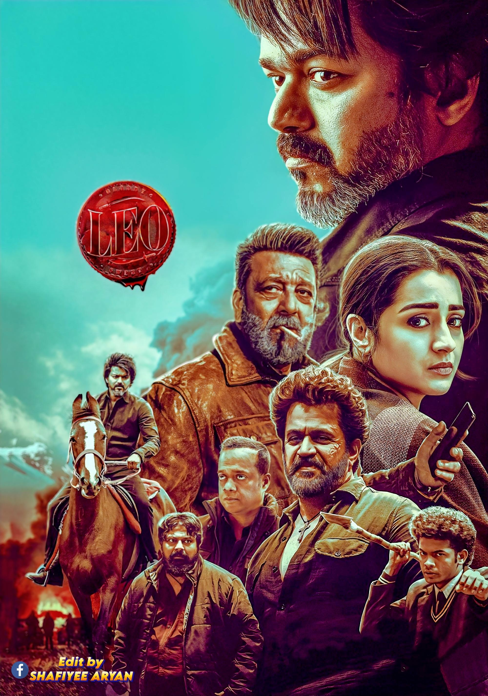

The star-studded main cast of Lokesh Kanagaraj's 2023 Tamil action-thriller blockbuster, Leo, features Thalapathy Vijay, Sanjay Dutt, Arjun Sarja, and Trisha Krishnan.
the most important cast rolling directors in this flim
Cast:
The 2023 Tamil-language action thriller Leo, starring Thalapathy Vijay and directed by Lokesh Kanagaraj, was made on an estimated budget of ₹250–300 crore. It emerged as an all-time blockbuster, concluding its theatrical run with a worldwide gross collection of approximately ₹605–624 crore.The film's massive box office success made it one of the highest-grossing Indian films of 2023 and the highest-grossing Tamil film in several regions at the time. A breakdown of its box office performance includes:
To book tickets for Thalapathy Vijay's film Leo in Chennai, you can easily use online ticket platforms to view theater showtimes, select your preferred seats, and purchase tickets directly from your device.Top Booking PlatformsBookMyShow: You can access the specific event page directly via the BookMyShow Leo Page to check theater availability and secure your seats.Ticketnew: For another great local booking option, you can browse showtimes and venues on the Ticketnew Chennai Movies platform.
If you are trying to reach the film's production house or the team, direct business and casting inquiries for Tamil cinema are typically handled through official artist management agencies or production studios located in Chennai, such as Leo International (based in Mount Road, Chennai).For specific details regarding the film's cast, reviews, or to stream it online, utilize the following direct pathways:Streaming & Viewing: You can watch the full film with subtitles on the official Netflix page.Cast & Crew Details: To view the full credits and behind-the-scenes information, check the IMDb page.Production Inquiries: For artistic representation and production-related services in the local area, contact details for Leo International on Justdial can be used.